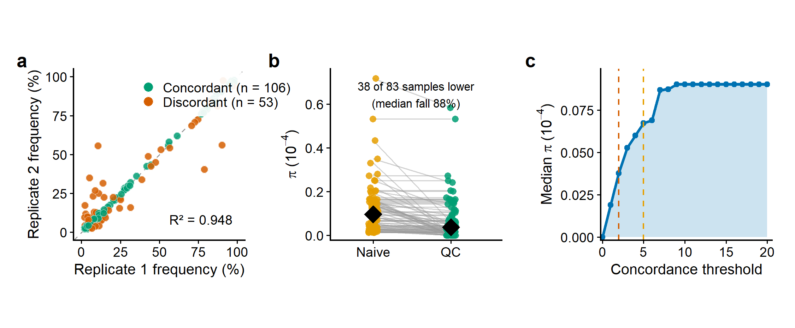
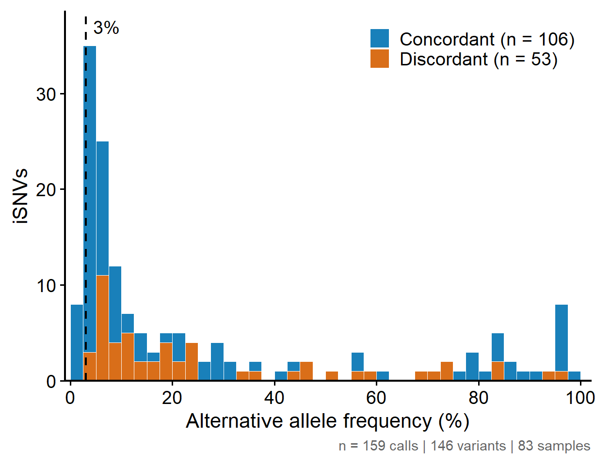
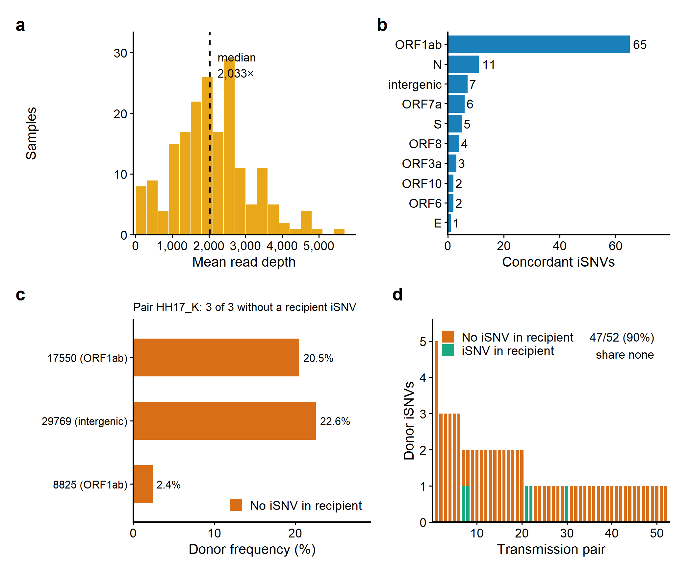
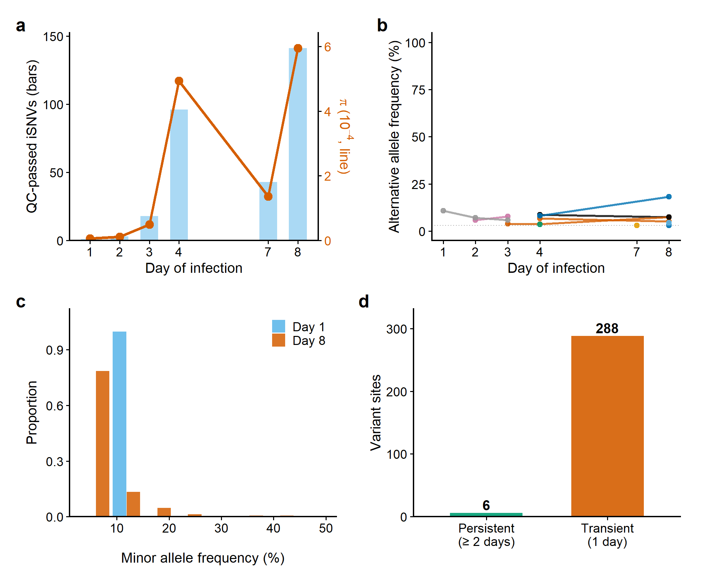
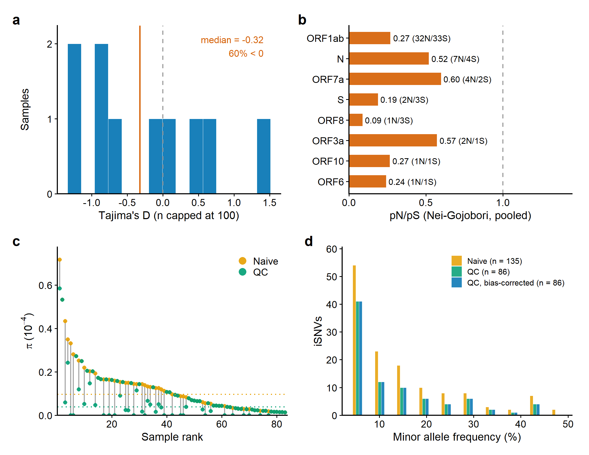
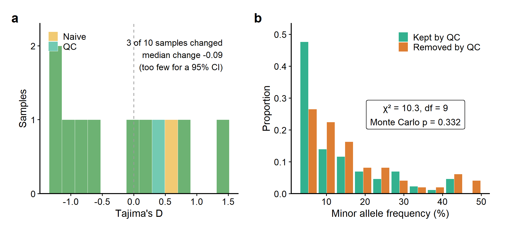

Bioconductor Infrastructure for Within-Host Pathogen Variant QC, Diversity, and Transmission Bottleneck Workflows


Why does this package exist?
Researchers studying within-host pathogen evolution run into four practical problems:
- Unreplicated iSNV calls include noise – in the duplicate sequencing of Bendall et al. (2023), 53 of 159 calls (33%) differ by more than 2 percentage points between replicates (Figure 1).
- Fragmented tooling – importing from iVar, annotating genes, filtering, computing diversity and exporting for bottleneck estimation are often handled by separate scripts (Figure 3).
- Longitudinal data need their own checks – following variant frequencies across sampling days needs tracking and consistency flags that a single-sample workflow has no use for (Figure 4).
- Hard filtering loses provenance – deleting variants that fail a threshold prevents re-analysis under other criteria. Flagging instead keeps every call, while downstream summaries use only those that pass (Figures 1c, 6).
WithinHostExperiment brings these steps into one RangedSummarizedExperiment-based container, from import through replicate-aware QC, diversity and longitudinal summaries to export for bottleneck estimation.
Data sources
All figures use real, publicly available data:
| Source | Data | Role |
|---|---|---|
| Bendall et al. (2023) Nat. Commun. 14:272 | 159 iSNVs, 83 samples, duplicate sequencing, 132 transmission pairs | QC, diversity, transmission, population genetics (Figs 1–3, 5–6) |
| Farjo et al. (2024) J. Virol. 98:e01618-23 | Participant 432870: 9 daily saliva samples; the 6 that the study analysed (mean coverage of at least 1,000x; days 1, 2, 3, 4, 7, 8) are used | Longitudinal within-host evolution (Fig 4) |
| NCBI RefSeq NC_045512.2 | SARS-CoV-2 gene annotation (GFF3) and reference sequence (FASTA) |
annotateGenes() (Fig 3b); annotateCodonChange(), through VariantAnnotation::predictCoding(), and the site counts of pNpSWithinHost() (Fig 5b) |
Four files from the Bendall et al. call table ship inside the package, in inst/extdata: both technical replicates of the donor and of the recipient of household HH6, four of the study’s 159 calls, which the vignette and the tests use as real data. The study’s repository states no licence, so they are reproduced as a short excerpt attributed to the paper and to the repository, and anyone wanting the data for their own work should take them from the source. The Farjo et al. files used for Figure 4 are kept only in the repository, not in the package, and come from a repository released under the MIT licence. For the two NCBI RefSeq files, NCBI states that it places no restrictions on the use or distribution of the data in its molecular databases. inst/scripts/README.md gives the provenance of every shipped file.
All figures were made with R version 4.6.1 by inst/scripts/generate_readme_figures.R, which also writes every number quoted below to inst/scripts/readme_values/readme_figure_values.csv; the captions are filled from that file by inst/scripts/fill_readme.R, which refuses to write a caption for a figure that run did not produce. No data were simulated. Frequencies are those of replicate 1 throughout, except in Figure 2, which bins the mean of the two replicates.
Problem 1: Unreplicated calls include noise

Figure 1 | Replicate-aware QC and post-hoc threshold exploration. (a) Replicate frequencies for 159 iSNV calls: concordant (|frequency difference| <= 2 percentage points, n = 106) and discordant (n = 53); R^2 = 0.948. That figure is carried by the spread across the whole range: among the calls below 10% mean frequency, where QC does its work, R^2 is 0.153. Across all calls, the median difference between replicates is 1.1 percentage points. (b) Per-sample nucleotide diversity before (naive) and after replicate QC; black diamonds mark the medians (0.096 and 0.038 x 10^-4). QC only removes calls, so pi cannot rise. It left pi untouched in most samples and lowered it in 38 of 83, by a median of 88% among those; in 18 samples no call survived and pi fell to zero. (c) Median pi as the concordance threshold varies from 0 to 20 percentage points of replicate difference, recomputed from the replicate frequencies already in the object rather than by re-importing and re-filtering the data; the dashed lines mark 2 and 5 percentage points.

Figure 2 | Where discordant calls fall. Mean replicate frequencies of the 159 calls, which fall at 146 distinct variants (position and substitution). Discordance is not confined to the low-frequency band where sequencing and amplification errors are hardest to tell apart from genuine minority variants: 18 of the 53 discordant calls sit below 10% (34%), against 62 of the 106 concordant ones (58%), so replicates disagree more often at intermediate frequencies than at the bottom of the range. Part of that is the rule itself: a fixed tolerance in percentage points removes more calls where the sampling spread of the difference is wider, as Figure 6b sets out.
Problem 2: One package, complete workflow

Figure 3 | From raw data to annotated transmission pairs. (a) Mean read depth, averaged over the two replicates, for all 188 sequenced samples (median 2,033x); the 83 samples that carry at least one iSNV call, and that every other panel uses, are a subset of them. (b) Concordant iSNV calls by gene, annotated with
annotateGenes()from the gene records of the NCBI GFF3, read withrtracklayer::import(). (c) Pair HH17_K, the pair with the most concordant donor iSNVs among those whose recipient carries calls of its own: 3 of 3 donor iSNVs have no call in the recipient, which carries 2 of its own. (d) Of the 52 pairs whose donor carried at least one concordant iSNV (132 pairs in the metadata), 47 (90%) share none with the recipient. Two limits matter for reading this panel. Recipient calls are limited to frequencies of 2–98%, so a donor variant that became fixed in the recipient also counts as not shared; and in 26 of these pairs the recipient carries no iSNV call at all, so absence of data is recorded here as absence of sharing. The panel describes detection and is not a bottleneck estimate (Bendall et al. 2023 report those).
Problem 3: Longitudinal tracking needs infrastructure

Figure 4 | Within-host dynamics across sampling days. Daily saliva samples from one SARS-CoV-2 participant (Farjo et al. 2024), limited to the 6 samples the study analysed (days 1, 2, 3, 4, 7, 8); a call needs at least 1,000 reads and a frequency between 3% and 97%. The iVar tables also list insertions and deletions; 909 such rows are dropped and the 1,252 substitution rows kept, so every count below is of iSNVs. (a) Richness (bars) and pi (line): QC-passed iSNVs peak at 141 on day 8, and pi peaks on day 8. (b) Frequency trajectories of the 10 variants with the widest frequency range, tracked with
trackFrequency(); the dotted line marks the 3% threshold. (c) Folded spectra frombuildSFS()on the first, peak and last sampled days, which here are days 1, 8; two of them coincide when the peak falls on the first or last day sampled. (d)flagTemporalInconsistency(): 288 of 294 variant sites (98%) are detected on a single day. A site can also be missed on a day when its depth is below 1,000 reads, or when its frequency leaves the 3–97% window, so a variant that goes to fixation is counted the same way; transient sites are flagged for review rather than treated as errors.
Evolutionary summaries from the same flagged data

Figure 5 | Population-genetic summaries of the flagged data. (a) Tajima’s D for the 10 samples carrying at least three concordant iSNVs, using read depth capped at 100 as the sample size: median -0.32, 60% below zero. They are the minority: of the 65 samples with any concordant call, 41 carry one (63%) and 14 carry two. Below three segregating sites D is a function of one or two frequencies rather than a description of a spectrum, so
tajimaD()returnsNAand those samples are absent from the panel. Calls below the 2% frequency threshold are absent, and negative D is expected both under purifying selection and after population growth, so these values describe the spectra rather than test either. (b) Within-host pN/pS, the ratio of nonsynonymous to synonymous iSNVs per site with sites counted by the method of Nei and Gojobori (1986), pooling concordant calls across samples (50 nonsynonymous, 49 synonymous; pooled ratio 0.29). A further 7 concordant calls lie outside the annotated coding sequences, or carry no codon annotation, and enter neither count. These are counts of polymorphism within hosts rather than of substitutions between them, so the ratio is a pN/pS, computed bypNpSWithinHost()with no multiple-hit correction. The panel shows the 8 genes with at least two counted calls and a defined ratio, leaving out 1; those ratios rest on a handful of calls and are given with their counts. None of them is evidence of selection on any gene. (c) Per-sample pi ranked by the naive estimate; segments show the reduction from QC. (d) Naive, QC and bias-corrected spectra asWithinHostSFSobjects frombuildSFS()andcorrectSFSBias()(binomial correction). The correction reweights bins by the chance of observing a variant at that frequency given the depth; at this depth every bin is far above the detection limit, so it changes 0 bins and the corrected series lies under the QC one.
Problem 4: QC should remove noise, not signal

Figure 6 | What replicate QC changes. (a) Tajima’s D before and after QC in the 10 samples carrying at least three calls both before and after: median -0.32 before QC and -0.32 after. QC removed no call from most of them, so it changed D in 3, where the median change is -0.09; so few values admit no distribution-free 95% interval, which needs at least six. Over all 10 the median change is 0.00, with a 95% interval of -0.09 to 0.00 from binomial order statistics: the unchanged samples outnumber the rest, so the interval sits against zero and carries little information about the size of the change. A further 6 samples leave the comparison because QC left them fewer than three calls, so they have no D after QC. (b) Frequency spectra of the calls QC kept and the calls it removed (86 and 49 of them fall inside the binned frequency range), compared with
compareSFS(): chi-squared = 10.3, df = 9, asymptotic p = 0.327 and Monte Carlo p from 10^5 tables = 0.332; the smallest expected count is 0.7. Two things keep this descriptive: calls pooled across samples are not independent draws, and the concordance rule is a fixed 2-percentage-point tolerance on a difference whose sampling spread grows with frequency, so the two groups would differ in shape to some degree even if every call were genuine.
Installation
# From Bioconductor:
if (!require("BiocManager", quietly = TRUE))
install.packages("BiocManager")
BiocManager::install("WithinHostExperiment")
# Development version from GitHub. Not recommended: it is not the version
# Bioconductor builds and checks, and it can change between commits.
BiocManager::install("CuiweiG/WithinHostExperiment")Quick start
library(WithinHostExperiment)
# 1. Import donor and recipient VCFs, with the reference they were called
# against so that the genome length is recorded on the object
vcf_d <- system.file("extdata", "test_donor.vcf",
package = "WithinHostExperiment")
vcf_r <- system.file("extdata", "test_recipient.vcf",
package = "WithinHostExperiment")
ref <- Biostrings::readDNAStringSet(system.file("extdata", "test_ref.fa",
package = "WithinHostExperiment"))
whe <- readWithinHost(c(vcf_d, vcf_r), genome = ref,
colData = S4Vectors::DataFrame(
sample_id = c("donor", "recipient"),
role = c("donor", "recipient"),
pair_id = c("pair_1", "pair_1")),
caller = "ivar")
# 2. QC -- flag, don't delete
whe <- flagISNV(whe, ISNVFilter(minDepth = 200L, minFreq = 0.03))
# 3. Diversity (finite-sample corrected pi, per site of the recorded genome)
div <- calcDiversity(passedISNV(whe))
# 4. Transmission bottleneck
nb <- quickBottleneck(whe, pairId = "pair_1")Key design principles
-
Flag, don’t delete. QC marks variants in
qcPassrather than removing rows, preserving all data for re-analysis under different thresholds. - Replicate-aware. Technical replicate concordance is part of the QC step rather than a separate script.
- Interoperable, don’t reinvent. Standardised export to ViralBottleneck (Zheng et al. 2025) and VRanges-based Bioconductor workflows.
-
Bioconductor-native. Built on
RangedSummarizedExperiment; subsetting, combining, and accessors follow Bioconductor conventions.
Relationship to existing tools
| Tool | Role | Relationship |
|---|---|---|
| iVar, LoFreq, Freebayes | Variant calling | Upstream – we import their output |
| deepSNV | Low-frequency variant detection | Upstream – complementary |
| ViralBottleneck | Bottleneck estimation (6 methods) | Downstream – we export to it; also self-contained via exactBottleneck()
|
| QSutils | Quasispecies diversity | Parallel – different granularity (haplotype vs iSNV) |
| CliqueSNV, ShoRAH | Haplotype phasing | Complementary – their output can feed into WHE |
Reproducibility
All README figures are generated from public data by one script, and the captions are then filled from the values it records:
# Clone the repository, then from the package root directory:
source("inst/scripts/generate_readme_figures.R")
source("inst/scripts/fill_readme.R")inst/scripts/reproduce_all.R runs the whole chain from the raw data: the Bendall et al. excerpts, the synthetic fixtures, the example dataset, an install of the source, the test suite, the figures, this README and the functional checks, each in its own R process, and reports whether every derived file came out as committed.
# From the package root of a clone:
system2(file.path(R.home("bin"), "Rscript"), "inst/scripts/reproduce_all.R")Data files in inst/scripts/real_data/ (GitHub only, not in installed package):
| File | Source | Description |
|---|---|---|
all_variants_filtered.tsv |
Bendall et al. 2023 | 159 iSNV calls, 83 samples, both replicates |
AvgCoverage.all |
Bendall et al. 2023 | Per-replicate mean amplicon depth |
Transmission_pairs.csv |
Bendall et al. 2023 | Household transmission pair metadata |
farjo_longitudinal/ |
Farjo et al. 2024 | Daily saliva iVar TSVs for participant 432870, with samples_432870.csv (dates, coverage and study inclusion, built by inst/scripts/prepare_farjo_metadata.R from github.com/BROOKELAB/SARS-CoV-2-within-host-evolution) |
sars2_NC045512.gff3 |
NCBI RefSeq | SARS-CoV-2 gene annotation (NC_045512.2) |
sars2_NC045512.fasta |
NCBI RefSeq | Reference sequence (NC_045512.2), read with Biostrings::readDNAStringSet() and passed to pNpSWithinHost(), which takes each call’s codons from annotateCodonChange(), for Figure 5b |
MHM*_rep*.tsv, all_variants_filtered_unmerged.tsv
|
Bendall et al. 2023 | Per-sample iVar tables and the pre-merge call table, kept as provenance for the merged file above; the figure script reads neither |
farjo_longitudinal/user_432870.csv |
Farjo et al. 2024 | The study’s own per-SNP summary for this participant, kept for comparison; not read by the figure script |
Key references
- Farjo M et al. (2024) Within-host evolutionary dynamics and tissue compartmentalization during acute SARS-CoV-2 infection. J. Virol. 98:e01618-23.
- Roder AE et al. (2023) Optimized quantification of intra-host viral diversity in SARS-CoV-2 and influenza virus sequence data. mBio 14:e01046-23.
- Bendall EE et al. (2023) Rapid transmission and tight bottlenecks constrain the evolution of highly transmissible SARS-CoV-2 variants. Nat. Commun. 14:272.
- Sobel Leonard A et al. (2017) Transmission bottleneck size estimation from pathogen deep-sequencing data, with an application to human influenza A virus. J. Virol. 91:e00171-17.
- Mostefai F et al. (2024) Refining SARS-CoV-2 intra-host variation by leveraging large-scale sequencing data. NAR Genom. Bioinform. 6:lqae145.
- Zheng B, Johnson PCD, Hughes J (2025) ViralBottleneck: an R package for estimating viral transmission bottlenecks from deep sequencing data using multiple methods. Virus Evol. 11:veaf071.
- Tajima F (1989) Statistical method for testing the neutral mutation hypothesis by DNA polymorphism. Genetics 123:585-595.
- Fu YX (1997) Statistical tests of neutrality of mutations against population growth, hitchhiking and background selection. Genetics 147:915-925.
- Nei M, Gojobori T (1986) Simple methods for estimating the numbers of synonymous and nonsynonymous substitutions. Mol. Biol. Evol. 3:418-426.